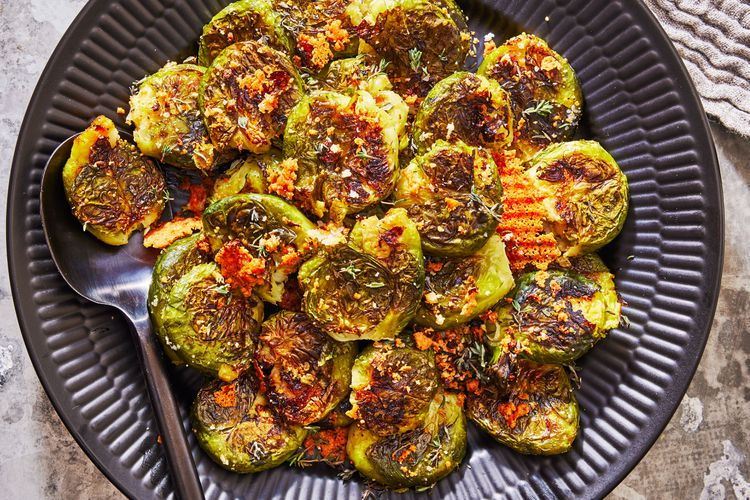

Garlic Bread Recipe

Description
These smashed Brussels sprouts will change the mind of any skeptical eater. They're cooked slightly, then smashed and seasoned so that when they're baked, they'll turn as crispy and flaky as a potato chip. (Well, almost.)
Ingredients
- 2 lbs. trimmed fresh Brussels sprouts
- 1/4 cup water
- 2 Tbsp. extra-virgin olive oil
- 2 1/2 tsp. minced fresh garlic
- 1 tsp. kosher salt
- 1/4 tsp. black pepper
- 1/3 cup grated Parmesan cheese
- Fresh thyme leaves (for garnish)
Steps
- Preheat oven to 425°F.
- Place trimmed fresh Brussels sprouts in a large microwavable bowl with water. Cover tightly with plastic wrap, and microwave on HIGH until just tender, 6 to 8 minutes.
- Carefully remove and discard plastic wrap; drain.
- Place cooked Brussels sprouts on a large-rimmed baking sheet. Using flat bottom of a measuring cup or mug, smash each Brussels sprout, and pat dry with paper towels.
- Drizzle evenly with extra-virgin olive oil, and sprinkle evenly with minced fresh garlic, kosher salt, and black pepper; toss to coat.
- Bake 10 minutes.
- Remove from oven, and sprinkle with grated Parmesan cheese.
- Bake until cheese is melted and set, about 5 minutes
- Using a spatula, transfer Brussels sprout mixture to a serving platter. Garnish with fresh thyme leaves.